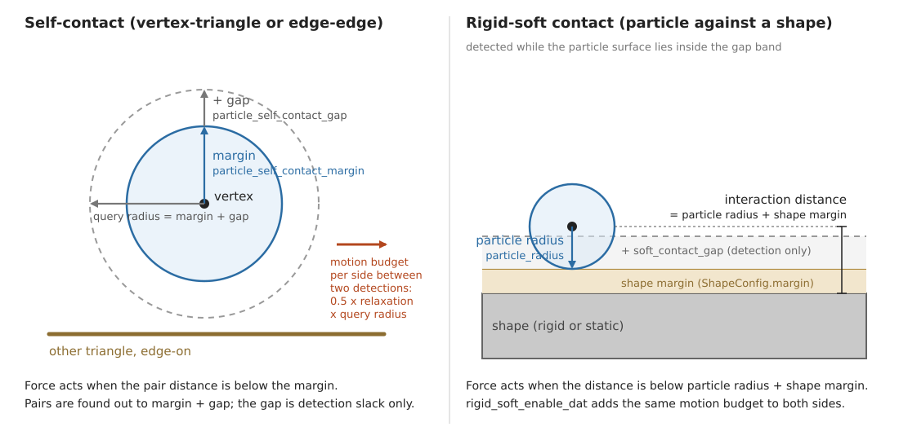
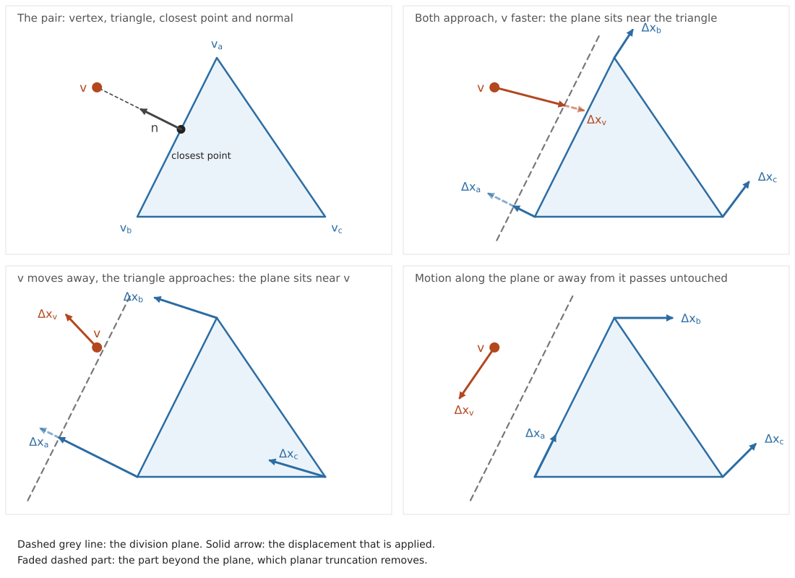
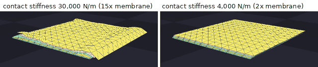
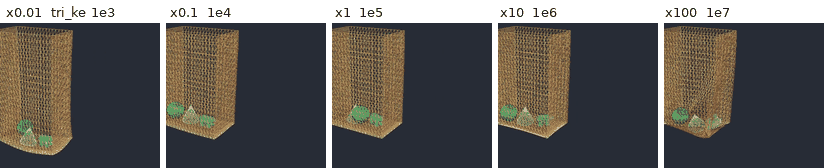
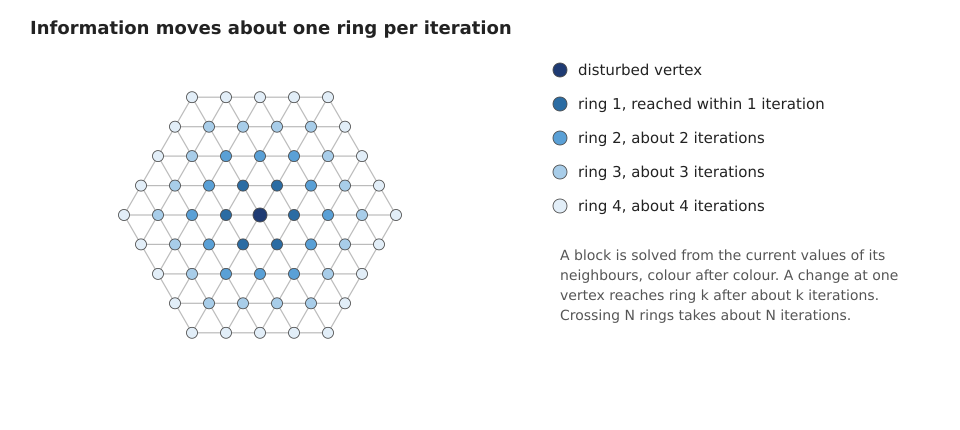

VBD Tuning#
This page explains how SolverVBD reacts to its solver
and model parameters, what typically goes wrong and how to fix it, and which
parameter combinations are known to work. It covers particle systems: cloth
(triangle meshes) and soft bodies (tetrahedral meshes), their self-contact, and
their contact with rigid and static shapes, grippers included. Rods, cables and
rigid articulations are out of scope here; see Solver Tuning Reference
for their knobs and VBD for setup and API explanations.
Simulation Tuning holds the diagnostic workflow that this page assumes.
Important
The specific values, mode names, and formulas on this page reflect the code
at a point in time and can drift. Treat them as starting points and verify
any you rely on against the cited source (for example
SolverVBD and its kernels). See
Simulation Tuning for the full guidance.
Mental Model#
VBD treats every time step as one minimization and solves it one block at a time. A block is one particle (3 degrees of freedom) or one rigid body (6). Each block solves a small local problem: with every other block held fixed, it takes one Newton step that balances its inertia against the forces acting on it. One pass over all blocks is one iteration, and the solver runs a fixed number of iterations per step. The material parameters on this page enter through the energy terms of that minimization, and contacts are energy terms too; the other parameters control detection, truncation and the iteration. How VBD Works on the backend page gives the step objective, the block solve and its call tree, the formula of every energy term, and the Divide and Truncate scheme (DAT) that keeps contacts penetration-free. The consequences for tuning are:
Stiff terms win the local solve. One term far stiffer than the others that share its vertices makes the local step serve that term and neglect the rest. See Stiffness ratio.
Information moves one ring per iteration. A vertex sees only the vertices it shares an element with, its one ring, so a change travels one ring of neighbours per iteration. A fine mesh needs more iterations to reach the same state. See A fine mesh converges slowly.
An unfinished solve becomes velocity. Corrections that did not settle inside the step come back as motion in the next step.
DAT caps motion between detections. DAT keeps contacts penetration-free by limiting how far a vertex may move between two contact detections. That limit, the motion budget, is a fraction of the distance out to which contact pairs are detected, the query radius. A small query radius means a small budget and visible DAT damping. See DAT damping: slow, hovering or locked motion.
Float32 sets a floor on the time step. See A smaller time step made things worse.
Parameter Effects#
Four contact distances appear in the tables below; Contact Handling
has the figure, the sums per contact type and the arguments that set them. The
interaction distance is where the contact force starts to act: the
self-contact margin, or the particle radius plus the shape margin for contact
with shapes. The detection slack is the extra reach of detection beyond
it, the gap, so that pairs are known before they interact. The query
radius is their sum. The motion budget is how far one side of a pair may
move between two detections under DAT: half of
dat_conservative_bound_relaxation times the query radius.
VBD-Specific Parameters#
The constructor arguments of SolverVBD that matter for
particle systems. Defaults are those of the constructor at the time of
writing; the class docstring is the source of truth.
Parameter |
What it controls |
Raise or enable when |
Cost or risk |
|---|---|---|---|
|
Block-descent sweeps per substep; how far information travels and how far the solve converges. |
The object looks too soft or lags; a finer mesh. For jitter only as the last resort, see Jitter: where to look first. |
Runtime grows linearly. Does not fix a stiffness-ratio problem. |
|
Relative velocity below which friction is smoothed; the smoothing
length is |
Friction chatters at rest. |
Slow creep under tangential load when large. |
|
Scale of both truncations: how close to its division plane a vertex may go, and the radius cap of 0.5 x this x query radius. |
Rarely; DAT damping with a query radius you cannot raise. |
Values near 1 leave no safety for detection error. |
|
Vertex-triangle and edge-edge self-contact with DAT. |
Cloth folds or stacks; soft bodies touch themselves. |
Detection cost; requires a non- |
|
Interaction distance: the surface offset at which self-contact forces start. Always pass it together with the gap. |
Visible gaps between layers are too small; see Setting margin and gap. |
Rest neighbours beyond the topological filter push each other when it exceeds their rest distance. |
|
Detection slack: pairs are found out to margin plus gap, and the motion budget scales with that sum. |
Motion looks capped or sticky (DAT damping); fast relative motion. |
More candidate pairs, larger buffers. |
|
Candidate pairs stored per vertex and per edge. Pairs beyond the capacity are dropped silently. |
Many layers or a large gap; tunneling. See Self-contact tunneling. |
Memory, detection time. |
|
Ring distance under which candidate pairs are discarded. |
A coarse mesh with a large interaction distance. |
Values above 3 raise the cost significantly (docstring). |
|
Pairs closer than this in the rest shape are never contacts. |
Seams, layered cloth, or thin regions that are close by design. |
Real contacts in those regions are missed too. |
|
Tile-based elasticity kernel specialized at construction. |
Keep on. Rebuild the solver after changing stiffness values. |
None in normal use. |
|
When self-contact detection runs. |
Fast motion with a small gap; for jitter only as the last resort. |
One detection pass per refresh. |
|
Rigid-soft normal law: quadratic penalty, or the self-contact barrier. |
Rigid-soft contacts that sink deep under load with the quadratic
penalty: the barrier force grows like \(1/d\) as the gap closes.
It does not stop a crossing; that is |
Stiffer local systems, more iterations. |
|
DAT truncation of rigid pose updates and particles against rigid-soft contact planes. |
Thin cloth between fast rigid parts. |
Rigid motion is capped by the rigid-soft query radius. |
|
Rigid-soft contact records per body. |
Dense cloth on a large body; grippers with many vertices in contact. |
Memory. |
Deprecated aliases remain for one release cycle: particle_self_contact_radius
(legacy radius and margin pair), particle_collision_detection_interval
(now the self-contact slot of the collision schedule) and
particle_conservative_bound_relaxation (now
dat_conservative_bound_relaxation). New code should not use them. Passing a
margin without a gap also triggers the legacy meaning of the margin and a
deprecation warning, so always pass both.
Model Parameters#
Model parameters are set when the geometry is added, through
add_cloth_mesh(),
add_cloth_grid(),
add_soft_mesh() and
add_soft_grid(), under the names below. After
finalize() they live on the Model
as the arrays tri_materials, edge_bending_properties,
tet_materials, particle_radius and particle_mass, and as the
scalars soft_contact_ke, soft_contact_kd and soft_contact_mu. The
formulas they enter are in The energy terms.
Parameter |
What it controls |
Raise when |
Cost or risk |
|---|---|---|---|
Membrane stretch and area stiffness (\(\mu\) and \(\lambda\) per unit area of the stable Neo-Hookean membrane). |
Cloth stretches visibly under its own weight. |
Above about 1e6, slow convergence and jitter under contact; stiffening only the membrane moves deformation into bending (see Example 2: stiffening only the membrane does not stiffen the object). |
|
Membrane damping. |
In-plane ringing after impacts. |
Overdamped, slow drape. |
|
|
Bending stiffness of the dihedral hinge. |
Cloth folds too sharply or looks too limp. |
Stiff hinges need more iterations; raise membrane and bending together for a stiffer object. |
Bending damping. |
Bending jitter; first knob of the jitter pipeline for cloth without contacts. |
Slow unfolding. |
|
Volumetric Neo-Hookean shear and volume stiffness. |
A soft body sags or inverts too easily. |
Same ceiling as the membrane; |
|
|
Volumetric viscous damping. |
Soft-body jitter; the soft-body knob of the jitter pipeline. |
Slow recovery. |
|
Contact stiffness for self-contact; averaged with the shape |
Penetration between layers or into shapes that the fix below does not cure. |
Keep within about 10x the elastic stiffness; see Example 1: contact stiffness too high compared to the elasticity. |
Contact damping on the gap rate, active only while approaching. |
Contact jitter; second knob of the jitter pipeline. |
Shrinks each correction by enlarging the local matrix; too much slows settling. |
|
Friction coefficient (geometric mean with the shape |
Cloth slides off a gripper. |
Sticking, slow sliding. |
|
|
The particle’s half of the rigid-soft interaction distance; also the resting offset from shapes. |
Cloth sinks into shapes. |
Visible floating; a large radius with a small mesh spacing distorts contact geometry. |
|
Particle masses (per area for cloth, per volume for soft meshes). |
Never as a fix; set it from the real object. |
Too small a mass is an explosion cause; see Explosion: what to check, in this order. |
shape |
The shape’s half of the rigid-soft material and distance. |
Set once per object; the shape |
|
|
Rigid-soft detection slack, added on top of particle radius plus shape margin. |
Fast relative motion between cloth and shapes. |
More rigid-soft records; rigid-soft DAT budget grows with it. |
|
Initial velocity of the added geometry. |
Never as a fix; a large initial velocity is an explosion cause. |
Time step, substeps and iterations#
Most shipped examples render at 60 frames per second with 10 substeps, so the
solver runs at dt = 1/600 s, with 4 to 20 iterations. Start there with 10
iterations. A smaller dt improves stiffness and convergence, because every
substep adds a full set of iterations and a detection pass. It also costs the
same factor in runtime. Do not go much below 1/3000 s: positions are stored in
float32, and when the per-step update becomes small compared to the position
value, part of each update is rounded away (one float32 unit at 1 m is about
1.2e-7 m). Before that floor, reducing dt does more for stiffness than
adding iterations. See Rules of Thumb for the order of operations.
Contact Handling#
Four distances govern a contact. The interaction distance is where the contact energy starts to act. The detection slack is the extra reach of detection, so pairs are known before they interact. The query radius is their sum. The motion budget is how far one side of a pair may move between two detections under the Divide and Truncate scheme (DAT), the solver’s penetration-free truncation (Penetration-free truncation (DAT)); it scales with the query radius. Self-contact pairs are vertex-triangle and edge-edge pairs of the same particle system; rigid-soft pairs are particles, edges or faces against a body or static shape.


Left: self-contact, shown for a vertex-triangle pair; edge-edge pairs use
the same distances. particle_self_contact_margin is the interaction
distance and particle_self_contact_gap is added on top of it: the two
stacked arrows sum to the query radius, drawn once more as the horizontal
arrow. Right: rigid-soft contact, with the particle resting at the
interaction distance particle_radius plus the shape margin; the
pipeline’s soft_contact_gap is a detection band beyond that.#
In the names of the SolverVBD constructor arguments,
the CollisionPipeline constructor arguments and the model
arrays, the four distances are:
Distance |
Self-contact |
Rigid-soft contact |
|---|---|---|
Interaction distance |
|
|
Detection slack |
|
|
Query radius |
|
|
Motion budget per side |
0.5 x |
0.5 x |
The force kernels act below the interaction distance; detection finds pairs out to the query radius. The default self-contact schedule detects before and after the inertial step of every substep, so the motion budget is refreshed twice per substep.
What DAT does to motion. DAT works on the displacement each vertex has
accumulated since the last detection, and it has two distinct parts. Its knobs
are SolverVBD constructor arguments
(VBD-Specific Parameters): dat_conservative_bound_relaxation is the
relaxation factor used below (default 0.85), particle_self_contact_margin
and particle_self_contact_gap set the self-contact query radius,
rigid_soft_enable_dat turns on the rigid-soft part, and
collision_frequency_type with collision_frequency sets how often
detection refreshes the budget.
Planar truncation acts per detected pair. At the detection-time positions DAT places a division plane between the two primitives. The plane splits the gap in proportion to how far each side wants to move toward the other, and each side keeps at least 5 percent of the gap. Each vertex of the pair may then move only up to its own side of the plane, scaled by the relaxation factor: motion toward the plane is cut at the plane, motion away from it or along it passes untouched. A pair whose primitives already intersect at detection time has no plane and is left unconstrained in that pass.
Radius truncation acts on every particle, pair or no pair. The length of the
accumulated displacement is capped at half of the relaxation factor
(dat_conservative_bound_relaxation) times the query radius. It is
isotropic: a vertex that wants to move further is slowed
down in every direction, not only along a contact normal. This cap is what
makes the scheme safe between detections: two primitives farther apart than the
query radius at detection cannot meet before the next detection, because each
side moves at most half of the relaxation factor times that radius.
Rigid-soft DAT (rigid_soft_enable_dat, off by default) applies both
parts to contacts between soft geometry and shapes. Both sides of a contact are
truncated against the same plane: the soft vertices as above, the rigid body by
scaling its whole pose update, translation and rotation together. The budget is
half of the relaxation factor times the smallest rigid-soft query radius (the
pipeline’s soft_contact_gap plus particle radius plus shape margin). It is
fixed when the solver is built, and it caps every dynamic body and particle in
the model while the option is on. Kinematic bodies are not truncated. A pair
without a certifiable separating plane freezes. The option needs a solver-owned
collision pipeline; for fast bodies raise the pipeline gap first, then the
detection frequency (a RIGID slot on ITERATIONS needs contact matching
in the pipeline; see contact matching on the
solver page). When self-contact is enabled too, the RIGID and
SOFT_SELF_CONTACT slots must use the same schedule type, and the same
frequency for ITERATIONS; the solver raises otherwise.
Both parts remove motion. A cloth that falls fast onto a shape, or a sheet pressed between fingers, can therefore move slower than physics would predict, hover at a fixed offset, or stop. This is DAT damping. The radius cap grows with the query radius, so the cure is more room: a larger gap first, then a larger margin.


Planar truncation for a vertex-triangle pair, redrawn after the DAT paper. Top left: vertex \(v\), triangle \((v_a, v_b, v_c)\) and the normal from the closest point on the triangle to \(v\). The dashed line is the division plane. Top right: both sides approach, \(v\) faster, so the plane shifts toward the triangle and gives \(v\) the larger share of the gap; the dashed parts of the displacements, which would cross the plane, are truncated. Bottom left: \(v\) moves away and the triangle approaches, so the plane sits close to \(v\) and the triangle gets almost the whole gap. Bottom right: motion that stays on its own side of the plane, along it or away from it, passes untouched.#
Setting margin and gap#
There is no single right value. The choice trades physical fidelity against cost and DAT damping.
Fidelity first. The interaction distance is where the contact force starts,
so it is the separation you see between unloaded surfaces. Two cloth layers
rest about one margin apart; a particle rests at about its radius plus the
shape margin from a shape; under load the separation shrinks by the load over
the contact stiffness. Pick the interaction distance from the thickness
you want to show. Pairs more than two rings apart are contact candidates, so an
interaction distance larger than their rest distance creates contact forces at
rest. Where a mesh is close to itself by design, such as seams or layered
panels, use particle_rest_shape_contact_exclusion_radius instead of a
smaller margin.
Change |
Cost |
Separation |
DAT damping |
Other effects |
|---|---|---|---|---|
Raise the margin |
More active pairs |
Larger visible gaps |
Less (larger budget) |
Rest neighbours beyond the topological filter can push each other |
Raise the gap |
More candidate pairs, larger buffers, more expensive collision detection |
None |
Less (larger budget) |
Dropped pairs when the buffers overflow |
Lower the margin |
Less |
Tighter contact |
More (smaller budget) |
Without DAT (rigid-soft default) a step that moves further than the interaction distance can pass through. With DAT on, tunneling stays possible in theory; see Self-contact tunneling |
Lower the gap |
Less |
None |
More (smaller budget) |
Fewer candidates; without DAT, pairs that close by more than the query radius between two detections are missed |
Starting point and adjustments. Take the values of the nearest example in Empirical Parameter Combinations That Work; they span 1 mm to 40 mm depending on the scene scale. Then adjust by symptom: a visible gap between layers means a smaller margin; slow, hovering or locked motion means a larger gap first and a larger margin second; dropped pairs (see Self-contact tunneling) mean larger buffers. Keep the gap at about half to one margin unless speed asks for more.
Stiffness, damping and friction together. The contact stiffness sets how far a contact penetrates under load and how stiff the local system becomes. Keep it within about 10x the elastic stiffness of the material it presses on. Contact damping only acts while the gap closes and mostly shrinks the per iteration correction, so it is a second-order knob. Friction scales with the normal force; a contact that is too soft also has too little friction, which shows as slipping in grasps.
Best Practices#
What Can Go Wrong and How to Fix It#
Symptom |
Likely cause |
Entry |
|---|---|---|
Cloth or a soft body jitters at a few vertices |
Stiffness ratio: contact far above the elasticity |
Example 1: contact stiffness too high compared to the elasticity |
Raising one stiffness does not make the object stiffer |
Stiffness ratio: the deformation moves into the terms that stayed soft |
Example 2: stiffening only the membrane does not stiffen the object |
A fine mesh is soft, laggy or slow to settle |
About one ring of information per iteration |
|
Motion is slower than expected, hovers or locks near contact |
DAT damping, small query radius |
|
Explosion or NaN at a few vertices |
Bad elements in the asset |
|
A smaller |
Compute budget, float32 precision |
|
Cloth passes through itself |
Candidate buffers overflow, or an exclusion filter |
Jitter: where to look first#
Work through these steps in order and stop at the first one that fixes it.
If the scene has self-contacts, check whether the self-contact stiffness is disproportionately high. Keep the collision stiffness within 10x of the elasticity stiffness:
soft_contact_keagainsttri_kefor cloth ork_mufor soft bodies. This is the stiffness ratio (Stiffness ratio).If not fixed, tune the self-contact damping,
soft_contact_kd.If it is still not fixed, or there is no contact, increase the elasticity damping: bending damping
edge_kdfor cloth, tet dampingk_dampfor soft bodies, andjoint_target_kdif the scene has articulations (see Solver Tuning Reference).Increasing the iterations or the collision detection frequency also helps, but both increase the computational cost. Only use them as the last resort. Iterations:
iterations. Detection frequency: set the self-contact slot to theITERATIONSschedule and give it a frequency,solver = newton.solvers.SolverVBD( model, particle_enable_self_contact=True, # plus your margin and gap collision_frequency_type={ newton.solvers.SolverBase.CollisionSlot.SOFT_SELF_CONTACT: newton.solvers.SolverBase.CollisionFrequencyType.ITERATIONS }, collision_frequency={newton.solvers.SolverBase.CollisionSlot.SOFT_SELF_CONTACT: 2}, )
which detects before the inertial step and then before every second iteration, in place of the pass after the inertial step. With
rigid_soft_enable_daton, give theRIGIDslot the same type and frequency; the solver raises instepotherwise, because the two DAT families share one motion reference. ARIGIDslot onITERATIONSre-detects between iterations, and the solver carries each contact’s multipliers onto the new contact set through the pipeline’s contact matching. Build the pipeline withcontact_matching="latest"(or"sticky"); with the default"disabled"the constructor raisesValueError. The solver page explains the mechanism (contact matching).
Explosion: what to check, in this order#
Asset quality. Add the mesh with
validate_mesh=Trueand read the warnings. See Bad asset.Density too small? A light vertex next to a stiff element or contact receives a large acceleration. Check
densityormassagainst the real object; do not lower them to speed things up.Stiffness too high? Compare the elastic and contact stiffness with the examples in Empirical Parameter Combinations That Work. Above about 1e6 expect trouble.
Initially penetrating? The validator does not detect intersections; it checks element quality and manifoldness only. Inspect the start pose with the viewer debugging tools. Layers that start inside the interaction distance receive a large separating push in the first steps.
Initial stretch or velocity too high? Compare the start positions with the rest shape, and check
veland any prescribed motion in the first frame.
Stiffness ratio#
Symptom. One stiffness stands far above the others, and raising it made things worse instead of better: a few vertices jitter and do not settle with more iterations, or the object does not get stiffer and even wobbles or buckles more.
Cause. The stiffness ratio. Every term that acts on a vertex enters the
same local system, so one stiffness far above the others impedes the overall
convergence and makes some of the elasticity look less stiff. The pair depends
on the scene: contact against the elasticity of the material it presses on,
membrane against bending, volume against shear (the k_mu, k_lambda row
of the model table), and in general any two terms that share vertices.
Fix. Keep the stiffnesses of terms that share vertices within about 10x of each other: lower the one that stands out, or raise the others with it. The rule is a starting point, not a universal one; after the change, check the behaviour the stiff term was there for, such as a grasp that must hold or a sheet that must not stretch. The two cases below are the common ones.
Example 1: contact stiffness too high compared to the elasticity#
Symptom. Cloth layers or a grasped sheet jitter at a few vertices. The motion is fast, local, and does not settle when you add iterations.
Cause. The stiffness ratio: the contact stiffness is too high compared to the elasticity.
Fix. Bring soft_contact_ke to within about 10x of the membrane
stiffness (tri_ke) or the volumetric stiffness (k_mu), then check that
grasps still hold. Lower contact stiffness also means lower friction force, so
a grasp can slip; in the pouch scene below, lowering the contact stiffness to
2x the membrane stiffness lost the grasp.


Five stacked cloth layers, the last two seconds of a seven-second rest,
same time in both runs. Membrane stiffness 2,000 N/m, self-contact margin
8 mm, gap 8 mm, dt = 1/300 s, 20 iterations. Left: contact stiffness
30,000 N/m. Right: 4,000 N/m. The scene is a test scene, not a shipped
example.#
Local motion of free vertices, 5 to 50 Hz band, 2 to 7 s |
Contact stiffness 30,000 N/m |
Contact stiffness 4,000 N/m |
|---|---|---|
Mean amplitude (RMS over vertices) [mm] |
0.93 |
0.016 |
95th percentile vertex [mm] |
1.93 |
0.020 |
Worst vertex [mm] |
4.79 |
0.024 |
“Local motion” is the motion of a vertex relative to the mean of its mesh neighbours, so a rigid shift of the whole stack does not count.
More iterations did not remove this kind of jitter. On a pinched pouch
(membrane 3,000 N/m, contact 50,000 N/m, dt = 1/300 s) the mean mesh speed
over 0.1 s was 0.123 m/s at 20 iterations, 0.023 m/s at 40, 0.141 m/s at 100
and 0.205 m/s at 200.
Reproduce. A similar setup is example_vbd_soft_rigid_contact with
soft_contact_ke raised from 1e5 to 1e6 while cloth_tri_ke stays at 1e5.
Example 2: stiffening only the membrane does not stiffen the object#
Symptom. You raise tri_ke and tri_ka by orders of magnitude and the
object still wobbles; at the highest values it buckles and wrinkles more.
Cause. The stiffness ratio: the membrane is far stiffer than bending. Once the membrane is near inextensible, the deformation energy moves into bending, which stayed soft.
Fix. Scale edge_ke together with tri_ke and tri_ka. Stiffening
both gives a monotonic stiffening with diminishing returns past the baseline.


A bag with rigid contents, pinned at the rim, rim driven sideways at
0.85 Hz, seconds 3 to 6 of the run. Only the membrane stiffness changes,
edge_ke stays at 200 N. dt = 1/600 s, 10 iterations. The x100 bag
buckles at the bottom. The scene is a test scene, not a shipped example.#
Multiplier |
Stretch score, membrane only |
Bend score, membrane only |
Stretch score, both scaled |
Bend score, both scaled |
|---|---|---|---|---|
x0.01 |
0.114 |
0.012 |
0.012 |
0.033 |
x0.1 |
0.015 |
0.008 |
0.007 |
0.018 |
x1 |
0.006 |
0.015 |
0.006 |
0.015 |
x10 |
0.006 |
0.045 |
0.006 |
0.015 |
x100 |
0.006 |
0.179 |
0.006 |
0.015 |
Baseline x1: tri_ke 1e5, tri_ka 2e4, edge_ke 200. Scores are mean
deformation measures over the last second of each run; lower means stiffer.
Scaling only the membrane leaves the stretch score flat from x1 on and raises
the bend score twelve-fold. Scaling both keeps every score flat.
Reproduce. A similar setup is example_cloth_hanging with tri_ke and
tri_ka multiplied by 100 and edge_ke unchanged, compared with all
three multiplied.
A fine mesh converges slowly#
Symptom. After refining the mesh, the object looks softer, lags behind contacts, or needs many more frames to settle, with unchanged material values.
Cause. Information moves about one ring per iteration. A block is solved from the current values of its neighbours, colour by colour, so a change reaches the next ring within one iteration and crosses \(N\) rings in about \(N\) iterations. At fixed iterations a finer mesh is therefore less converged at the end of every step.


A change at one vertex reaches ring \(k\) after about \(k\) iterations. Refining the mesh by a factor of two doubles the number of rings across the object and so, roughly, the iterations needed for the same convergence.#
Fix. Use the lowest resolution that expresses the deformation you need.
When you refine, raise iterations roughly in proportion to the number of
rings across the object.
DAT damping: slow, hovering or locked motion#
Symptom. Near contacts, cloth falls slower than gravity, hovers at a fixed offset, or a pinched region stops moving.
Cause. The motion budget between detections is too small for the motion the scene asks for. The radius truncation caps the displacement since the last detection at 0.5 x relaxation x query radius, and the planar truncation stops a vertex at its division plane, so a small margin and gap cap the speed.
Fix. Raise particle_self_contact_gap first, then
particle_self_contact_margin, following Setting margin and gap. For
rigid-soft contact raise the pipeline’s soft_contact_gap. More frequent
detection also refreshes the budget more often, at a cost.
Bad asset#
Symptom. NaN or an explosion at a few vertices from the first frames, jitter at rest in one region, or warnings when the mesh is added.
Cause. Degenerate or sliver elements make the local solve ill-conditioned.
Fix. Run the built-in checker, then apply isotropic explicit remeshing. The checker is opt-in:
builder.add_cloth_mesh(
pos=pos, rot=rot, scale=1.0, vel=wp.vec3(0.0),
vertices=vertices, indices=indices, density=0.1,
validate_mesh=True, label="shirt",
)
builder.add_soft_mesh(
pos=pos, rot=rot, scale=1.0, vel=wp.vec3(0.0),
vertices=vertices, indices=tets, density=100.0,
k_mu=1.0e5, k_lambda=1.0e5, k_damp=1.0,
validate_mesh=True, label="sponge",
)
It never raises; it warns and adds the mesh anyway. The same checks are
available directly as newton.utils.validate_triangle_mesh() and
newton.utils.validate_tet_mesh(). The checker inspects element quality and
manifoldness; it does not detect intersections between or inside meshes.
Thresholds at the time of writing:
Mesh |
Check |
Threshold |
|---|---|---|
Triangles |
Small area |
below 1 mm² (1e-6 m²) |
Triangles |
Sliver, longest edge over shortest altitude |
above 20 |
Triangles |
Minimum interior angle |
below 5° |
Triangles |
Non-manifold edge (always checked by the adjacency builder) |
edge shared by more than two faces |
Tetrahedra |
Inverted element |
signed volume below 0 |
Tetrahedra |
Small volume |
below 1 mm³ (1e-9 m³) |
Tetrahedra |
Sliver, shape quality \(\eta\) (1 for a regular tetrahedron) |
below 0.01 |
Tetrahedra |
Non-manifold face |
face shared by more than two tetrahedra |
A warning has this form (the numbers are illustrative):
NewtonWarning: Mesh quality warning [bag] (873 vertices, 1544 triangles):
- 4 sliver triangle(s) with aspect ratio > 20.0 (worst: 27.3)
- 1 triangle(s) with minimum angle < 5.0° (smallest: 4.0°)
Consider remeshing the input geometry.
Apply isotropic explicit remeshing, for example MeshLab’s filter
Remeshing: Isotropic Explicit Remeshing, with a target edge length that is
uniform over the asset and larger than the interaction distance. Then add the
mesh with validate_mesh=True again. Remeshing at a coarse target can still
leave slivers; the checker tells you.
A smaller time step made things worse#
Symptom. After halving dt the simulation is slower, and either nothing
improved or the object drifts and loses detail over long runs.
Cause. Two effects. First, a smaller dt costs more substeps per second,
each with collision detection; at a fixed compute budget it takes iterations
away from each substep. Second, positions are float32. A small dt gives a
small per-step update compared to the position value, so part of each update is
rounded away, and the loss accumulates over time.
Fix. Start at dt = 1/600 s with 10 iterations. Reduce dt while it
visibly helps, but not below about 1/3000 s. Beyond that, spend the budget on
iterations, or move the scene closer to the origin so that positions are small
numbers.
Self-contact tunneling#
Symptom. Cloth passes through itself, or one layer of a stack drops through another, although self-contact is enabled.
Cause. The candidate buffers overflow, or a filter excludes the pair. Each
vertex stores at most particle_vertex_contact_buffer_size vertex-triangle
candidates (default 32) and each edge at most
particle_edge_contact_buffer_size edge-edge candidates (default 64). Pairs
beyond the capacity are dropped silently, and a dropped pair has no force and
no division plane; only the radius cap still limits its vertices. The
topological filter and the rest-shape exclusion radius also
remove pairs, by design.
Fix. Raise the two buffer sizes, and lower the gap if it is far above the
margin. The detector records the number of pairs found per vertex and per edge,
including the dropped ones, next to the buffer sizes. A count above the buffer
size is a measured overflow. The result struct is reachable as
solver.trimesh_collision_info (fields vertex_colliding_triangles_count,
vertex_colliding_triangles_buffer_sizes, edge_colliding_edges_count and
edge_colliding_edges_buffer_sizes); it is an experimental type and can
change. If a filter is the cause, lower
particle_rest_shape_contact_exclusion_radius or check the external filter
maps you passed.
Empirical Parameter Combinations That Work#
Start from an example, not from material data. Stiffness values derived from measured material properties (Young’s modulus, Poisson ratio, thickness) are usually far too high for VBD to converge at practical iteration counts. Each shipped example below is a working combination of material, contact and time-step values for its scenario. Open the example file for the complete configuration; the examples are maintained with the solver, so their values are the ones to copy. The resemblance given for each scenario is visual, at the example’s scale, not a material measurement.
Scenario |
Example |
What it demonstrates |
|---|---|---|
Cloth drape |
cloth_hanging
(run with |
A planar cloth fixed on one side hangs under gravity and settles on the ground. Resembles a heavy cotton sheet at a coarse scale. |
Cloth with a robot |
A Franka arm folds a shirt: VBD cloth coupled with a Featherstone robot, in centimetre scale. Resembles cotton cloth handled by a gripper. |
|
Stiff sheets |
52 cards stack on a cube and are knocked off by a sphere; high bending stiffness keeps their shape. Resembles playing cards, cardboard. |
|
Inextensible sheet |
A curtain pinned along one edge swings and settles with very stiff membrane values. Resembles a plastic membrane that drapes but does not stretch. |
|
Soft-body beams |
Four tetrahedral beams hang with damping from 1e4 down to 1e1, showing what damping does to Neo-Hookean behaviour. Resembles rubber to foam beams, depending on the damping. |
|
Soft box with ribbon |
Four soft blocks tied by cloth straps drop and bounce while the straps hold the stack together. Resembles a foam box with a thin ribbon. |
|
Soft-body grasp |
A Franka arm grasps, lifts and drops a tetrahedral rubber duck. Resembles a firm rubber block in a gripper. |
|
Thin bags with contents |
Six cloth bags each hold a different rigid shape type; the bags settle, then lift their contents, so rigid-soft contact can be inspected per shape type. Resembles plastic bags holding rigid objects. |
|
Tarp under fast impacts |
Heavy, fast projectiles hit sheets that catch them; rigid-soft DAT keeps the cloth outside the bodies where contact stiffness alone cannot. Resembles a tarp struck by thrown objects. |
|
Gripper on a soft pad |
A parallel-jaw gripper pinches a two-triangle grid on its interior edge and lifts it, which needs full-surface rigid-soft contact. Resembles a foam pad pinched and lifted. |
Rules of Thumb#
Use the lowest resolution that expresses the deformation you need. Raise it only when the degrees of freedom are not enough.
Use a uniform triangulation with good element quality. Check it with
validate_mesh=True, and apply isotropic explicit remeshing when it warns.Start at
dt= 1/600 s and 10 iterations, and adjust from there. If you start from a shipped example, keep its values.Keep a copy of the last working configuration and change one parameter at a time, so you know what each change did and can go back. The Simulation Tuning page explains the one-knob rule.
Start from the paradigm example closest to your task:
cloth_hangingfor cloth simulation,cloth_frankafor cloth manipulation,softbody_hangingandsoftbody_frankafor soft bodies,vbd_gripper_soft_gridfor grippers.Keep the collision stiffness within 10x of the elasticity stiffness. A contact that is far stiffer than the material it presses on jitters.
Always pass the self-contact margin and gap together, and keep the gap at about half to one margin. Raise the gap before the margin when motion looks damped near contacts.
Scale membrane and bending stiffness together. Stiffening only the membrane moves the deformation into bending.
Do not blindly crank up stiffness. It can be challenging for VBD to simulate a stiffness higher than about 1e6; a static drape can still work at higher values, as
cloth_stiff_material_hangingshows at 1e8. If your stiffness is already very high, cranking it up further is unlikely to help and only creates more artifacts from the stiffness ratio. Look into, in this order: the resolution (is such a high resolution necessary? reducing it immediately improves convergence and so increases stiffness); the stiffness ratio (one stiffness far above the others impedes the overall convergence and makes some of the elasticity look less stiff, see Stiffness ratio); then the time step (reducing it always helps, but not below about 1/3000 s; more iterations also help, and beforedtgets too small, reducingdtimproves stiffness more than adding iterations).Start from an example’s values, not from measured material data. Derived stiffness values are usually too high for VBD to simulate.
Increasing the iterations or the collision detection frequency helps, but both increase the computational cost. Use them as the last resort.